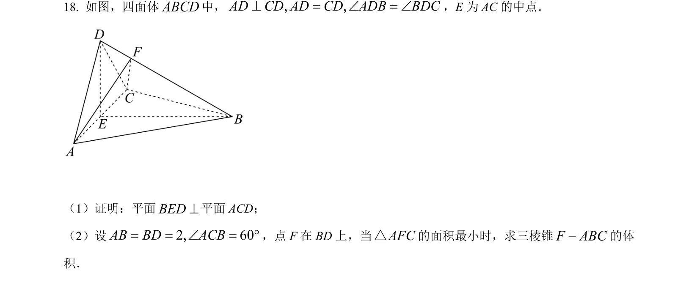
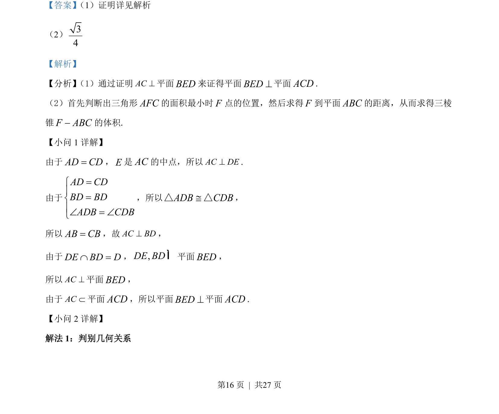
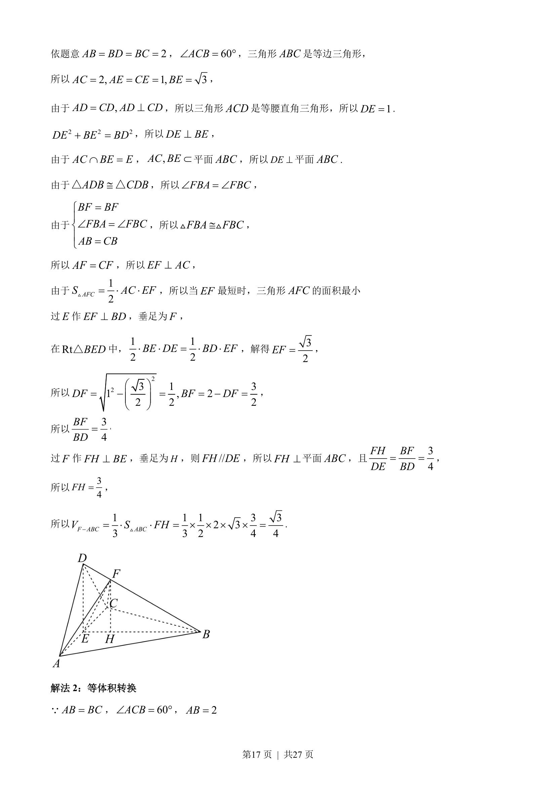
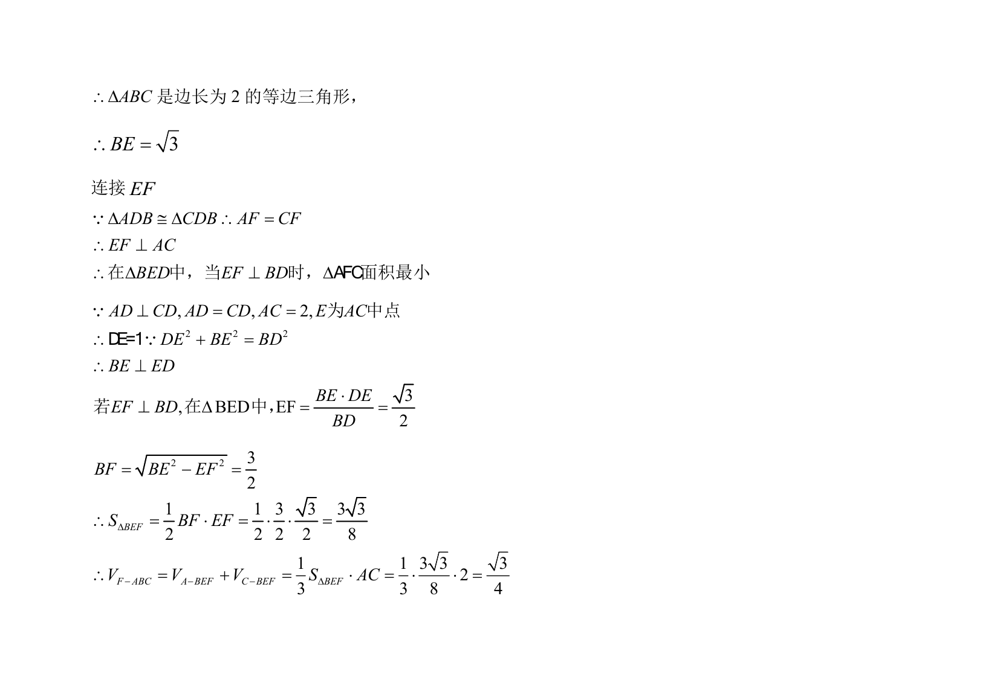

考点：线面垂直 面面垂直 三棱锥体积计算 空间几何关系

本题通过线面垂直证明面面垂直，并结合几何关系求解三棱锥体积。



📄 原 PDF 第 16 页：
素材/真题/吉林/2008-2024·（吉林）数学高考真题/2022年高考数学试卷（文）（全国乙卷）（解析卷）.pdf
【答案】 （1）证明详见解析
（2）34
【解析】
【分析】 （1）通过证明AC^平面BED来证得平面BED^平面ACD.
（2）首先判断出三角形AFC的面积最小时F点的位置，然后求得F到平面ABC的距离，从而求得三棱
锥F ABC-的体积.
【小问 1 详解】
由于AD CD=，E是AC的中点，所以AC DE^.
由于
AD CDBD BDADB CDB=ìï=íïÐ = Ðî
，所以ADB CDB@△△，
所以AB CB=，故AC BD^，
由于DE BD DÇ =，,DE BDÌ平面BED，
所以AC^平面BED，
由于ACÌ平面ACD，所以平面BED^平面ACD.
【小问 2 详解】
解法 1：判别几何关系